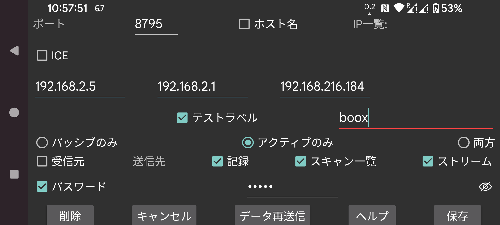

ar be de es fr hi it ja nl pl pt ru sv tr uk uz zh en
Juggluco の別のインスタンスとの接続を指定します。1 つの端末上の Juggluco は IP/TCP 経由で別の端末上の Juggluco にデータを送信します。接続を確立するには、一方の Juggluco がポートを待ち受けし、もう一方がそのポートに接続する必要があります。この Juggluco インスタンスが待ち受けているポートは前の画面(左中メニュー → ミラー)で指定されました。ここでは、この Juggluco インスタンスが能動的に接続する場合に接続するポートを指定します。この Juggluco インスタンスがポートを待ち受けできない場合は「能動のみ」を選択します。相手側がポートを待ち受けできない場合は「受動のみ」を選択し、それ以外は「両方」をチェックしたままにします。相手側の Juggluco は、ここで 能動のみ を選択した場合は 受動のみ、ここで 受動のみ を選択した場合は 能動のみ、ここで 両方 を選択した場合は 両方 を指定する必要があります。
この Juggluco インスタンスが能動的に接続する場合、接続先の IP を指定する必要があります。そのホストに複数の IP がある場合は複数指定します。例えば、2 台の端末がホームネットワーク経由で接続される場合と、ポータブルホットスポットとして直接接続される場合があるときなどです。
警告: 複数の端末の IP を決して指定しないでください。その場合、各端末はデータの一部しか受信しません。
hostname: IP ではなく 1 つのホスト名を指定します。これにより接続がネームサーバーに依存し、より遅くなり、ネームサーバー接続の中断の影響を受けます。これは静的 IP を設定できず、ホスト名が動的 IP に自動的に割り当てられる場合にのみオンにすべきです。
「能動のみ」以外のすべての場合「検出」を選択できます。この場合、Juggluco に最初に接続してきた IP を相手側の IP として保存します。正しい端末が接続しているかを確認する方法は 2 つあります: IP をテストするには「IP をテスト」を選択します。「ラベルをテスト」を選択すると、両側が同じラベルを指定している場合のみ接続が確立されます。
このアプリをミラーアプリとして機能させたい場合は 受信元 を選択します。
この端末を 送信側 にする場合は、どのデータを送信するかを指定する必要があります。
記録: 指定した用量、食事、運動データ。
スキャン: センサーのスキャンで受信したデータ(Libre 2 でのスキャンと履歴、Libre 3 では Bluetooth 経由でセンサーにアクセスするのに必要なデータのみ)。
ストリーム: Bluetooth で受信したデータ。Libre 3 ではこれに履歴データも含まれます。
場合によっては受信側の端末に既にデータが存在しています。このデータがいつまで存在するかを指定できます:
開始: データなし
現在: すべてのデータあり
または、画面の開始位置で決まる特定の日付。
既存の接続にデータソースが追加された場合、開始日は追加されたデータソースのみを決定します。例えば、すでにスキャンとストリームがホストに送信されており、現在記録が追加されている場合、開始日は送信する記録のみを決定します。
2 台の端末が安全でない接続経由で接続されている場合、接続の両側で同じ(最大)16 文字の パスワードを指定することでデータに署名と暗号化を行えます。保存を選択して指定した内容を保存します。削除はこの接続仕様を削除します。
QR: QR コードをスキャンして接続の相手側を作成します。
最も簡単な状況では、すべての接続がホームネットワークに属するため、ローカル IP を使えます。Wi-Fi でインターネット経由で接続することもできます。その場合、外部ポートをホームネットワーク上の IP とポートに転送する方法についてモデムのマニュアルを参照してください。
インターネット経由のモバイルデータ接続で接続された 2 台のスマートフォンは、いずれか一方がネットワークポートを待ち受けできれば、互いに直接接続できます。両方ができない(例えばどちらにも個別の IP がない)場合でも、第 3 の端末を介して通信できます。1 つの選択肢は、自宅でモデム経由でインターネットに接続された Android 端末(最低 Android 4.4)上で Juggluco を実行することです。もう 1 つの選択肢は、コンピューター(例えば PC や Amazon AWS)上で Juggluco に属するコマンドラインプログラムを実行することです: https://www.juggluco.nl/Juggluco/cmdline/index.html
ポート転送のチュートリアル:
https://portforward.com/how-to-port-forward/
https://stevessmarthomeguide.com/understanding-port-forwarding/
NFC のない端末で Bluetooth 経由で血糖値を受信できます(https://www.juggluco.nl/Juggluco/mirror 参照): NFC 端末で NFC 経由でセンサーを初期化し、それからスキャンとストリームデータを非 NFC 端末に送信します。その後、ストリームデータの接続を逆向きにし、NFC 端末で Bluetooth 接続をオフにし、非 NFC 端末でオンにし、また NFC 端末で「Bluetooth 経由のセンサー」をオフにし、非 NFC 端末でオンにします。これにより、1 台の端末でスキャンし、別の端末で Bluetooth 経由で血糖値を受信できます。ただし、すべての端末ですべてのセンサーデータが利用可能である必要があります。データを交換する端末では、常にスキャンとストリームデータの両方を受信する必要があります。したがって、ストリームデータは常に NFC 端末に、スキャンデータは常に非 NFC 端末に送り返す必要があります。そうしないとデータの同期が取れなくなり、古い認証データが使用されたり、新しいデータが古いデータで上書きされたりします。
記録データは完全に独立しています。
接続を形成するまったく異なる方法が ICE (Interactive Connectivity Establishment) です。これによりポート転送なしで Juggluco の 2 つのインスタンス間で接続を形成できます。ほとんどの場合、2 台のスマートフォンは間にサーバーなしで直接接続を取得します。場合によってはこれが不可能で TURN サーバーが必要です。TURN サーバーは左中メニュー → ミラー → TURN サーバーで指定できます。他の場合、サーバーは 2 台のスマートフォンを引き合わせるためだけに必要です。このために、接続の両側のみで共有され、Juggluco の他のユーザーが使用していない「ICE ラベル」を指定する必要があります。接続の片側は 0 を、もう片側は 1 を指定する必要があります。また、接続の両側で ラベル を共有する必要がありますが、これはこれらのスマートフォン上で一意であればよいです。ここですべてを指定する代わりに、左中メニュー → ミラー → AutoQRを使って接続を自動生成し、接続の相手側のスマートフォンで QR コードをスキャンできます。
接続の両側で厳密に補完的な仕様が必要です。1 つの単純な省略でデータ送信が不可能になることがあります。
接続がハングし、WIFI をオン/オフにするか同期を押してリセットする必要があることがあります。また、能動のみ-受動のみ 接続を 両方 に切り替える、または逆に切り替えることで違いが出ることもあります。
接続の変更に伴う IP の変更も考慮する必要があります。例えば、ホームネットワークではポータブルホットスポット経由とは異なる IP を使う必要があります。